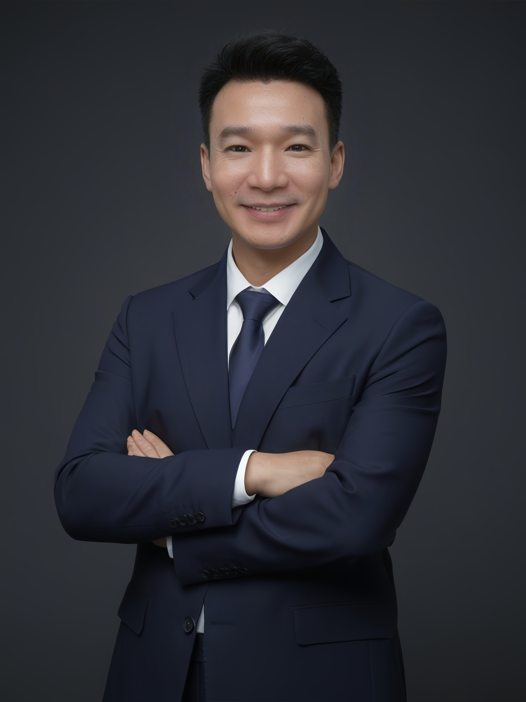

Luxury Hotel Leader
Hotel Manager of a 483-room flagship property in Beijing's financial district.
15+ years in luxury hospitality across Waldorf Astoria, Westin, and Sheraton.
Hong Kong SAR · Beijing, China
Luxury hotel operations leader with over 15 years of progressive experience across iconic international hospitality brands, including Waldorf Astoria, Westin, and Sheraton. Currently serving as Hotel Manager of The Westin Beijing Financial Street, a 483-room flagship hotel, with full operational accountability across Food & Beverage, Culinary, Engineering, and Loss Prevention.
Translating brand strategy and ownership vision into operational excellence. Building high-performing executive teams. Delivering sustainable results in complex, owner-driven environments. Completed the Marriott Development Academy (MDA) – Hotel Leadership Certificate, and certified as a Hilton Leader in Luxury.
DHTM candidate at The Hong Kong Polytechnic University, School of Hotel & Tourism Management
Exploring how luxury hotels leverage digital technologies to transform operations, enhance guest experience, and create competitive advantage in an evolving marketplace.
Investigating the deployment and governance frameworks of artificial intelligence in hospitality — from operational AI to guest-facing intelligent systems and ethical considerations.
Examining the convergence of cultural heritage and tourism, and how integrated experiences create value for destinations, guests, and local communities alike.
The Westin Beijing Financial Street | 483 Rooms | Multi-Outlet F&B | 1,600 sqm MICE
Principal operational leader overseeing Food & Beverage, Culinary, Engineering, and Loss Prevention. Act as primary operational partner to the General Manager, translating ownership objectives and brand strategy into annual operating plans, budgets, and long-term initiatives. Exercising strong cost discipline and asset stewardship while balancing service excellence with sustainable profitability.
Waldorf Astoria Beijing | F&B Area Champion – Hilton North China (Luxury & Lifestyle)
Strategic business leader for a flagship luxury F&B portfolio. Collaborated with the Executive Chef to develop market-leading culinary concepts tailored to Beijing's ultra-luxury dining market. Served as a strategic bridge between Hilton Corporate F&B and property-level leadership across the North China luxury portfolio.
WeWork, Beijing | Premium Flexible Workspace Portfolio
Managed a portfolio of premium flexible workspace assets in Beijing CBD with full P&L accountability. Achieved and maintained near-full occupancy through integrated operational and commercial strategies.
Waldorf Astoria Beijing | Michelin 1-Star Restaurant · French Brasserie · Luxury Banqueting
Oversaw a high-profile portfolio including Zijin Mansion (Michelin 1-Star Cantonese), a Michelin-recognized French brasserie, and large-scale banqueting. Planned and executed 50+ high-profile luxury dining and brand collaboration events with Montblanc, Vera Wang, Chopard, and Aston Martin.
Sheraton Hotel Qingdao Licang | F&B Champion – Marriott Shandong Area
Full accountability for the operational and financial performance of the F&B division. Consistently achieved guest satisfaction and profitability targets through strategic planning, product development, and leadership development.
Sheraton Hotel Qingdao Licang · Sheraton Grand Hotel Macau, Cotai Central
Key member of the pre-opening leadership team for a fine-dining restaurant within a large-scale integrated resort. Operated the outlet as a complete business unit, delivering strong results from day one.
Doctor of Hotel and Tourism Management (DHTM) — In Progress
School of Hotel & Tourism Management, The Hong Kong Polytechnic University
Master of Hotel & Tourism Management
Guilin University of Technology (2024)
Marriott Development Academy (MDA) — Hotel Leadership Certificate
Hilton Leader in Luxury Certification
Hotel Revenue Management Certification
Food Hygiene & Safety Certification
Sichuan International Studies University (SISU)
Appointed as an external graduate supervisor at the School of International Business and Management, guiding postgraduate students in Hotel Management and Tourism Management.
Beijing Jiaotong University & Guilin University of Technology
Guest Lecturer for the MBA International Program at Beijing Jiaotong University. Guest Lecturer at the College of Tourism and Landscape Architecture, Guilin University of Technology.
Ministry of Human Resources and Social Security
Expert Reviewer for Catering Service Standards, contributing to national-level industry standards and policy development in the food service sector.
Feel free to reach out via any of the channels below.